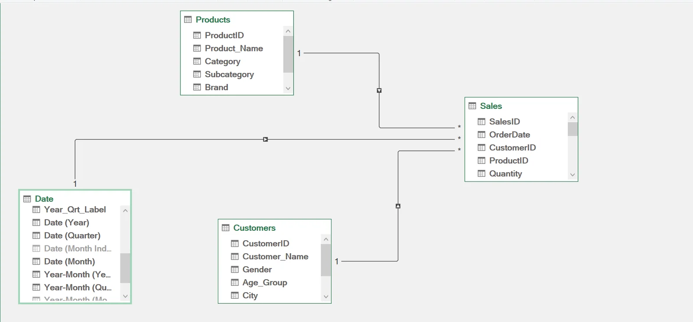
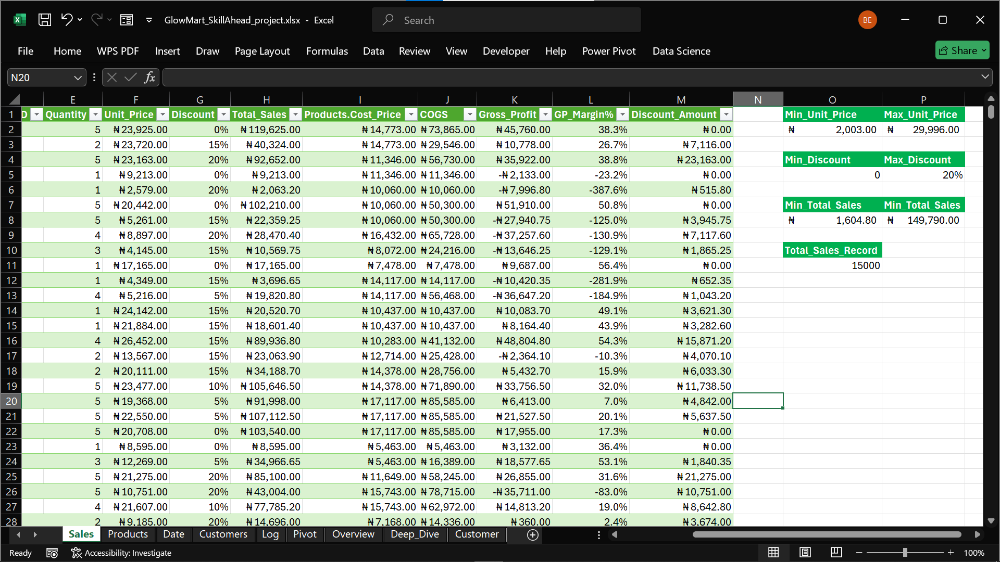
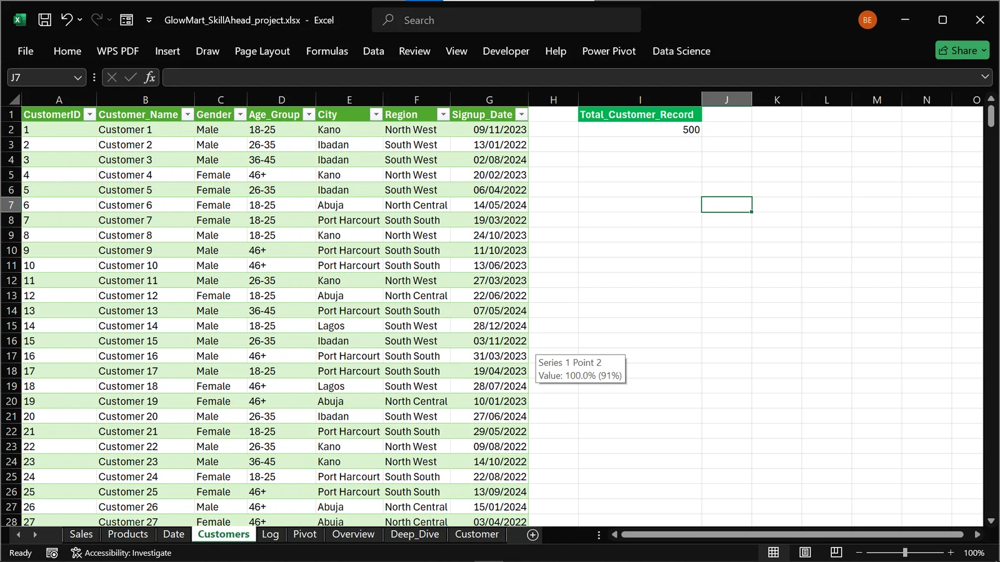
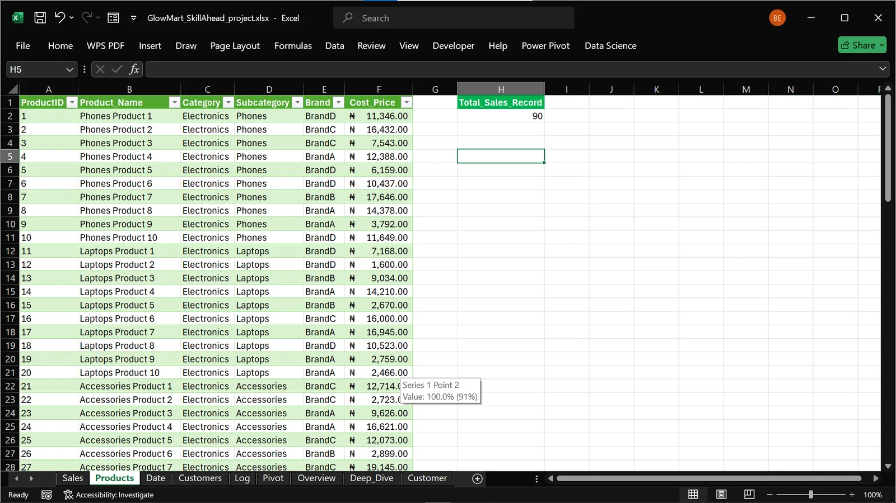
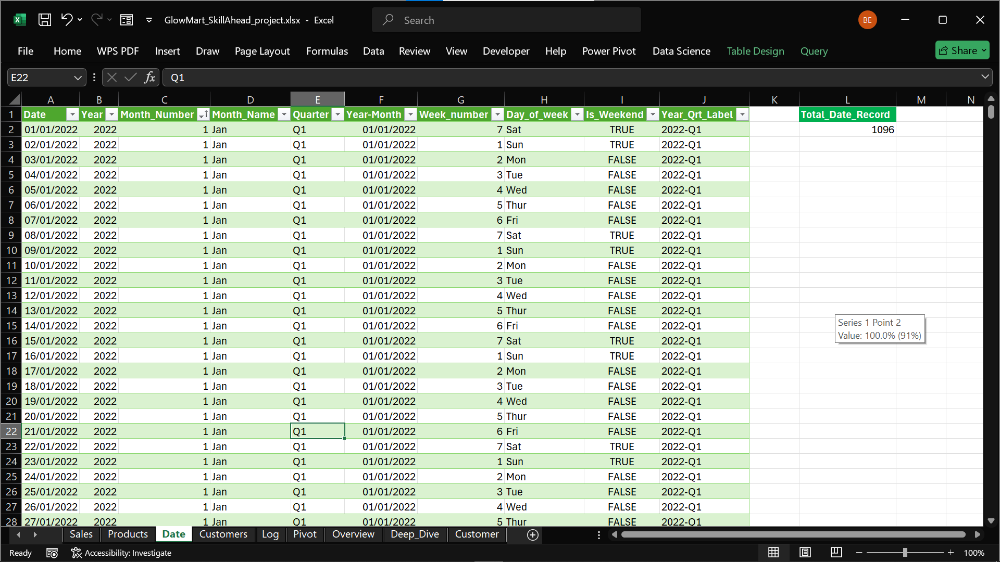

The workflow
I used Excel like a BI tool: prepare the data, model it, measure it, visualise it, then report it. Keeping data preparation separate from reporting makes the workbook easier to maintain and extend.
The data
| Attribute | Value |
|---|---|
| Analysis period | 2022 to 2024 |
| Transactions | 15,000 |
| Customers | 500 |
| Cities | 5 |
| Product brands | 4 |
| Units sold | 45,226 |
| Total revenue | ₦652.6M |
| Gross profit | ₦180.4M |
| Total discount given | ₦72.4M |
Data model
Instead of one large spreadsheet, I used a small relational model: one fact table in the middle and three lookup tables around it. It is easier to scale, simpler to report from, and it is how BI tools expect data to be organised.

Sales (fact table)
Holds every transaction. All the measures are calculated from this table.
Columns Sales ID, Customer ID, Product ID, Date, City, Quantity sold, Total sales, Cost of goods sold, Gross profit, Discount

Customer
Used for customer segmentation and behaviour analysis.
Columns Customer ID, Gender, Age group, City

Product
Used for brand level reporting and profitability.
Columns Product ID, Brand, Category

Date
A dedicated calendar table, so time comparisons such as year over year, quarterly and monthly trends work properly.
Columns Date, plus derived Year, Quarter, Month and Month name

Data preparation
I cleaned and shaped the data in Power Query before any analysis. Doing it first keeps PivotTables, PivotCharts and the dashboard calculations accurate and fast.
- Review data qualityCheck the raw data for problems before building anything on top of it.
- Correct data typesMake sure dates are dates and numbers are numbers, so calculations behave.
- Create calculated fieldsAdd the fields the analysis needs, such as gross profit.
- Build the calendar tableCreate the Date table and derive Year, Quarter, Month and Month name.
- Prepare lookup relationshipsSet up the keys that connect Sales to Customer, Product and Date.
- Load to the Data ModelSend the cleaned tables into Power Pivot, ready for reporting.
Analytical approach
I did not start by choosing charts. I started with the decision management needed to make.
- Understand the problemAsk what decision management needs to make, not which charts to build.
- Pick the KPIsChoose the measures that answer that decision: revenue, profit, growth, customer behaviour and stock fairness.
- Test the assumptionThe Sales Manager said stock was the problem. I compared revenue share with customer share to test it instead of accepting it.
- Look for other explanationsOnce stock was ruled out, I looked at brands, customers, city growth, discounts and trends.
- Turn it into adviceThe final dashboard explains what happened, why, and what management should do next.
KPIs and formulas
Each KPI is there because it helps answer a specific business question, not just to fill a card.
Total revenue
₦652.6MSUM(Sales[Total_sale])The highest level view of performance and the base for every other money measure.
Total transactions
15,000COUNTA(Sales[SalesID])Revenue alone hides activity. Transactions give context and are needed to work out average order value.
Total customers
500DISTINCTCOUNT(Sales[Customer ID])A customer should count once however often they buy. A distinct count stops repeat purchases from inflating the number.
Average order value
₦43,506.92Total revenue ÷ Total transactionsShows the typical purchase size. It is also the test for discounts: if discounts work, higher discounts should come with higher order values. They did not.
Total units sold
45,226SUM(Sales[Quantity])Separates growth from higher prices and growth from more product actually moving.
Gross profit
₦180.4MRevenue − Cost of goods soldRevenue shows what comes in. Gross profit shows what is left after direct product costs.
Gross profit margin
27.6%Gross profit ÷ RevenueI divide total gross profit by total revenue on purpose. Averaging each transaction's margin would give small sales the same weight as big ones and give a misleading answer. The ratio of totals is the true business margin, and it lets me compare brands, cities and periods fairly.
Revenue per customer
₦1.31MTotal revenue ÷ Total customersA high level measure of customer value over the three years, useful for acquisition and retention decisions.
Transactions per customer
30Total transactions ÷ Total customersA business grows by finding more customers or by getting existing ones to buy more often. This measures the second.
Total discount given
₦72.4MSUM(Sales[Discount Amount])Discounts are revenue given away. Tracking the total shows whether the spend is earning enough back.
Discount rate
11.1%Total discount ÷ Total revenueA percentage says more than a naira figure. It shows how much of total sales is being given up through promotions.
Visual choices
I picked every chart by the question it had to answer. The aim was never attractive charts. It was to show evidence clearly.
Revenue share vs customer share
Question: Is stock shared fairly across cities?
Why this choice: Cities differ in size, so raw revenue cannot answer that. Putting revenue share and customer share side by side makes even small gaps easy to see.
Why not: A pie chart. Small percentage differences are hard to compare in slices.
What it showed: The biggest gap was about 0.3%.
Revenue by city
Question: Which cities earn the most?
Why this choice: Ranked bars show relative performance at a glance, and horizontal bars keep the city names fully readable.
What it showed: Port Harcourt earned the most, but all five cities sit in a narrow range.
Monthly revenue trend
Question: Is the business growing steadily?
Why this choice: Trends show what single numbers hide. Thirty-six months on one line shows rises, dips and flat stretches, and the markers keep each month readable.
What it showed: Revenue stayed roughly flat with small swings.
Brand revenue and gross margin
Question: Which brands earn both sales and profit?
Why this choice: A brand can sell a lot and still earn little. Bars for revenue with margin on the same chart show both without needing a second chart.
What it showed: Brand A led on both. Brand C sold well but earned the least.
Brand by city heatmap
Question: Do preferences differ across cities?
Why this choice: Colour intensity lets you spot patterns faster than reading a grid of numbers. Green marks stronger performance and red marks weaker.
What it showed: Brand A did well in every city. No city looked very different, so a standard national stocking approach still fits, with small local changes.
Quarterly revenue trend
Question: Is there a seasonal pattern?
Why this choice: Quarters smooth out monthly noise but still show more detail than yearly totals.
What it showed: There was no regular fourth quarter peak.
City performance by year
Question: Which cities are improving and which need help?
Why this choice: Grouping the years for each city puts every city's change side by side.
What it showed: Ibadan recovered the most in 2024. Abuja fell the most.
Discount vs average order value
Question: Do discounts make customers spend more?
Why this choice: A scatter plot is built for checking whether two numbers move together. If discounts worked, higher discounts would sit alongside higher order values.
What it showed: The link was weak.
Customer demographics
Question: Who is the core customer?
Why this choice: The donut shows each age group's share of revenue. The bar compares male and female revenue. Two small visuals finish the customer story without clutter.
What it showed: Spending is spread evenly across groups.
Dashboard layout
The dashboard has three pages, one for each stage of the decision. An executive should understand the business situation from the first page in under a minute, so the layout follows reading order: business health, the verdict, revenue performance, then supporting detail.
| Page | Question it answers | What is on it |
|---|---|---|
| Executive overview | Is there actually an inventory problem? | KPI cards, revenue share vs customer share, revenue by city, monthly trend, insight panel |
| Brand and city deep dive | If stock is not the problem, what is? | Brand revenue and margin, brand by city heatmap, quarterly trend, city growth by year, insight panel |
| Customer and efficiency | What should management do next? | Demographics, gender split, discount effectiveness, discount vs order value, recommendations |
Excel features used
| Feature | What I used it for |
|---|---|
| Power Query | Cleaning and preparing the raw data before analysis |
| Power Pivot | Building the data model and managing relationships between tables |
| PivotTables | Turning transactions into business-ready summaries |
| PivotCharts | Dynamic charts connected to the slicers |
| Slicers | Interactive filtering across the dashboard pages |
| Conditional formatting | The brand by city heatmap |
| IFERROR() | Keeping calculation errors off the dashboard |
| SUM(), AVERAGE() | Totals such as revenue and gross profit, and averages such as order value |
| COUNT / DISTINCT COUNT | Counting transactions and unique customers |
| Shapes and icons | KPI cards and navigation panels |
| Custom number formatting | Showing ₦652.6M instead of a long number |
| Sparklines | Small revenue trends inside KPI cards |
Design principles
Simplicity
Every visual exists to answer a business question. I added nothing just to fill space.
Consistency
Colours, type, spacing and formatting stay the same across all three pages, so users spend less effort figuring out each one.
Executive focus
The most important information comes first. The KPIs and the verdict sit at the top.
Interactivity
Slicers let people filter the dashboards without touching the underlying data model.
Storytelling
The pages follow one story: is there a stock problem, if not what is going on, and what should be done. They are not a pile of separate charts.
Challenges and lessons
Challenges
Preparing the data
Raw transactions needed shaping in Power Query before anything useful could be built.
Choosing KPIs
It would have been easy to show every metric. I kept only the ones that helped answer the Managing Director's questions.
Fitting the story into three pages
I tested every visual against one question: does this help answer the brief? If not, it came out.
Testing an assumption
The easy path was to accept that stock was the problem. Checking it with data pointed somewhere else entirely.
Lessons
A dashboard should answer questions
The most useful one helps someone decide with confidence.
Good analysis challenges assumptions
The story everyone started with was about stock. The data said otherwise.
KPIs should support decisions
Every KPI here earned its place. Metrics with no business value were left out.
Storytelling is part of analytics
Without a clear narrative, accurate analysis can still fail to change anything.
If I took it further
Move the dashboard to Power BI for enterprise reporting. Connect it to a SQL database so it refreshes automatically. Build demand forecasting models. Add inventory optimisation analysis. Add customer lifetime value. Forecast sales with Python.